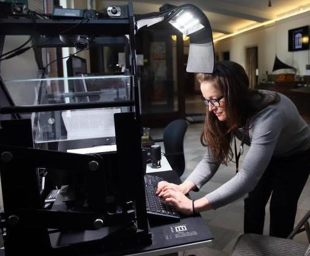
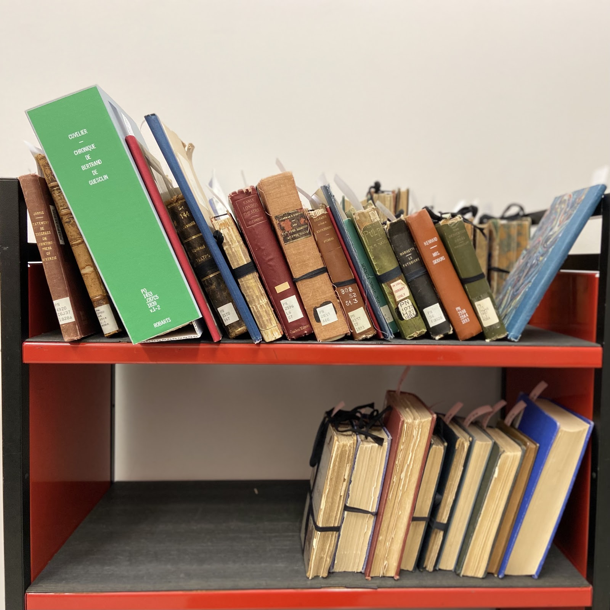
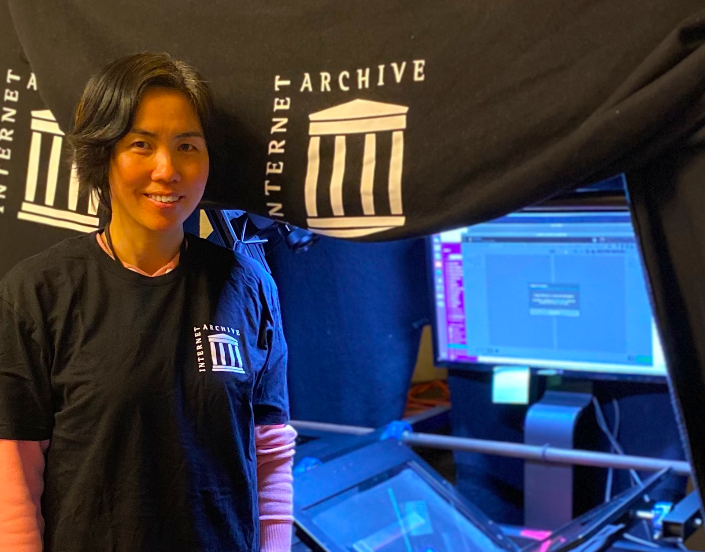
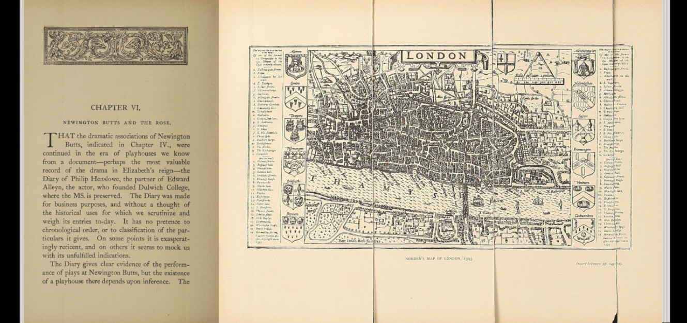
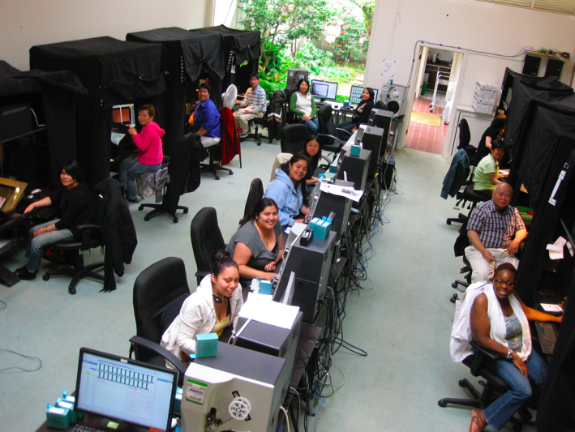
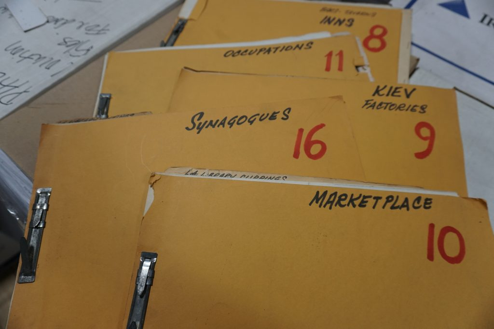

Sometimes they arrive tied up in string because their binding is broken. Others are in envelopes to protect the brittle pages from further damage.
Aging books are sent from libraries to the Internet Archive for preservation. Thanks to the careful work of the nearly 70 people who scan at digitization centers in the United States, United Kingdom and Canada, the books get a second life with a new audience.
Scanners sometimes call these “Last Chance Books” and they take pride in restoring them. As they turn the pages one at time to be photographed and digitized, they develop a daily cadence—but it must be adjusted with fragile materials.
The Dedication of Books by H.B. Wheatley (1887), as presented for scanning and after digitization. View online.
“We do our best with the flaking or cracking pages,” said Andrea Mills, digitization program manager for the Internet Archive stationed in Toronto, Canada. “You have to be really cautious that the flake doesn’t fall off and cover a word. It’s almost like a puzzle.”
Elizabeth MacLeod, demoing a Scribe in the foyer of the Internet Archive in San Francisco, pre-COVID.
Some books that land at the Internet Archive digitization centers date back to the 1700s. They are fiction and nonfiction, journals and pamphlets covering a range of topics. And, it can be surprising to learn what reviving the material means to patrons.
“We chuckled when we digitized a book on sea captains. We thought – who will care? And then a year later, it had hundreds of views,” said Elizabeth MacLeod, senior manager of satellite digitization services who manages remote operations out of Wilmington, North Carolina.
Digitization helps preserve materials that are no longer in circulation at their holding library because they are falling apart. It also gives new exposure to books that are out of print that may otherwise be forgotten.
Both Mills and MacLeod began working for the Internet Archive more than 10 years ago as book scanners – also known as Scribe operators. Mills has an arts degree in jewelry design and teaching; MacLeod studied biology. They were both drawn to the mission of the Internet Archive and share a passion of connecting people with resources.
A cart of “last chance books” awaiting digitization at the University of Toronto.
Over the years, Mills and MacLeod have worked closely with librarians and archivists around the world to digitize their collections, learning more with each project. They now manage digitization and support sites with training and best practices, many embedded in libraries, in 10 countries and upwards of 30 locations. Digitizing is a somewhat solitary task and some people “get in the zone” while scanning; others are very chatty or listen to music, Mills said.
Andrea Mills, showing off the Scribe to a tour celebrating the 2020 ALCTS Outstanding Collaboration Citation for digitizing a collection of Tamil materials at University of Toronto.
Many employees have worked together for nearly a decade and there is a friendly, collaborative vibe at the centers. “We have all sorts of people—artists, printers and photographers. They are people who are meticulous and love books,” Mills said. A recent viral video shared on the Internet Archive’s Twitter account features Scribe operator Eliza Zhang, who has worked at the Archive for more than ten years. Book conservators from larger institutional partners also offer additional training for Internet Archive operators on best practices for handling their unique collections.
MacLeod says the scanners are all committed to providing a service to readers and it’s satisfying to help people with disabilities connect with books, “It’s energizing to be part of an organization that is thinking outside the box,” she said. “I want people to be able to have more access to whatever they are trying to find.”
Added Mills: “I’m an information junky. I love the search and the hunt and the finding the answer. The power of the internet and digitization is that you can find that answer faster. It just sort of opens up the possibilities of what can do.”
Written by Professor Tom Gally, University of Tokyo, and Katie Barrett, Internet Archive & JET Program Alum Translations by Tomoki Sakakibara, University of Tokyo
(日本語はページ下部にあります。 Scroll down for Japanese version.)
As our global society grows ever more connected, it can be easy to assume that all of human history is just one click away. Yet language barriers and physical access still present major obstacles to deeper knowledge and understanding of other cultures, even on the world wide web. That is why the Internet Archive is thrilled to announce a new partnership with the University of Tokyo General Library. Spearheaded by Masaya Nakatake as a member of the UTokyo Academic Archives Project Office, the Internet Archive partnership provides expanded access and a digital backup for some of the library’s most precious artifacts.
Since June 2020, our Collections team has worked in tandem with library staff to ingest thousands of digital files from the General Library’s servers, mapping the metadata for over 4,000 priceless scrolls, texts, and papers. The collection, representing meticulous digitization efforts by Japanese historians and scholars, showcases hundreds of years of rich Japanese history expressed through prose, poetry, and artwork.
Most of the works are written in Japanese, but some of them include illustrations that can be appreciated by anyone now. A search through the collection for 地震 (jishin, “earthquake”), for example, yields a fascinating set of depictions of earthquakes and their impact in past centuries.
In one satirical illustration, thought to date from shortly after the 1855 Edo earthquake, courtesans and others from the demimonde, who suffered greatly in the disaster, are shown beating the giant catfish that was believed to cause earthquakes. The men in the upper left-hand corner represent the construction trades; they are trying to stop the attack on the fish, as rebuilding from earthquakes was a profitable business for them.
Other highlights are high-resolution images from the Kamei Collection of original etchings from Opere di Giovanni Battista Piranesi, Francesco Piranesi e d’altri, originally published by Firmin Didot Freres in Paris between 1835 and 1839.
We hope this partnership and collection will expand access to history and culture from Japan and spur a new generation of usage and scholarship.
About the University of Tokyo General Library
The University of Tokyo was established in 1877 as the first national university in Japan. As a leading research university, UTokyo offers courses in essentially all academic disciplines at both undergraduate and graduate levels and conducts research across the full spectrum of academic activity. The University of Tokyo Library System is composed of 30 libraries, with the General Library being the largest among them. While providing services to the researchers and students of UTokyo, the General Library also plays a central role in the operation and management of the Library System. The General Library’s history can be traced back nearly 130 years to the university’s founding and it now houses approximately 1.3 million books, including rare collections inherited from academies in the Edo period.
About the Internet Archive
The Internet Archive is one of the largest libraries in the world and home of the Wayback Machine, a repository of 475 billion webpages. Founded in 1996 by Internet Hall of Fame member Brewster Kahle, the Internet Archive now serves more than 1.5 million patrons each day, providing access to 70 petabytes of data—books, web pages, music, television, and software—and working with more than 800 library and university partners to create a digital library, accessible to all. To make a donation to the Internet Archive, please visit https://archive.org/donate/
Academics, legal experts, and authors explained the thoughtful reasoning and compelling need for libraries to engage in Controlled Digital Lending (CDL) at a webinar hosted by the Internet Archive and Library Futures on February 11. A recording of the session is now available.
The panel dispelled myths about CDL, the digital lending model in which a library lends a digital version of a print book it owns. Emphasizing the limited and controlled aspect of the practice, the speakers said CDL allows libraries to fulfill their mission of serving the public in the digital age. The global pandemic only underscores the importance of providing flexibility in how people can access information.
Isn’t CDL digital piracy? No, CDL is not like Napster, said Kyle K. Courtney, copyright advisor at Harvard University, referring to the music file-sharing service. Twenty years ago, the actions of Napster were ruled illegal because it made unlimited reproductions of MP3 music to anyone, anywhere.
“CDL uses technology to replicate a library’s right to loan works in a digital format—one user at a time,” Courntey said. Libraries are using rights they already have, leveraging the same technology as publishers to make sure that the books are controlled when they’re loaned—not duplicated, copied or redistributed.
“Libraries are not pirates. There is a vast difference between the Napster mission and the library mission,” Courtney said. “We can loan books to patrons. Only now we’re harnessing that right in the digital space.”
In laying out the rationale behind CDL, Courtney described the “superpower” granted to libraries by Congress through copyright law to serve the public. The “fair use” section of the law allows libraries to responsibly lend materials, and experts say logically includes both print and digital works.
The idea of “fair use” has been around as long as there has been copyright, and it applies to new technologies, said Michelle Wu, attorney and law librarian at the webinar. The Internet Archive did not invent CDL. Wu is the visionary behind CDL, developing the concept in 2002 as a way to protect a library’s print collection from natural disaster—an imperative she faced in rebuilding a library destroyed by flooding.
Just as libraries lend out entire books, fair use allows the scanning of whole books, said panelist Sandra Aya Enimil, copyright librarian and contract specialist at Yale University. The law makes no mention of the amount of material that can be made available under “fair use,” so for libraries to fulfill their purpose they can make complete books—whether in print or digital—available to patrons, she said.
It’s a myth that librarians need author and publisher permission for CDL, explained Jill Hurst-Wahl, copyright scholar and professor emerita in Syracuse University’s School of Information Studies. “Authors and publisher control ends at the time a book is published, then fair use begins,” she said. “Once a work is legally acquired by you, by a library, the copyright owners’ rights are exhausted.”
Library lending is viewed as fair use, in part, because it is focused on socially beneficial, non-commercial outcomes, like literacy, said Hurst-Wahl. Also, libraries loan physical books without concern about the market effect—so the same rules apply if a digital version of the book is substituted.
CDL does not harm authors or publisher sales, the panelists emphasized. Indeed, it can provide welcome exposure.
“The reality is that CDL can help authors by enhancing discoverability, availability and accessibility of their works,” said Brianna Schofield, executive director of Authors Alliance, speaking at the event. “It helps authors to spread their ideas, and it helps authors to build their audiences.”
Many of the books that are circulated by CDL are rare, out-of-print books that would otherwise be unavailable. This source material can be useful for writers as they develop their creative works.
“Digital and physical libraries contribute to a healthy publishing ecosystem and increase sales and engagement for creative works,” said Jennie Rose Halpin, executive director of Library Futures, a newly formed nonprofit coalition advocating for libraries to operate in the digital space. Research shows that leveraged digitization increases sales of physical additions by about 34% and increases the likelihood of any sale by 92%, particularly for less popular and out-of-print works.
Because digitized versions can be made more readily available, CDL can extend access to library collections to people with print disabilities or mobility issues, the panelists noted. CDL also allows libraries to preserve material in safe, digital formats with the best interest of the public—not profits—at the center of its work.
“People love books and will buy if they’re able. But we have to remember that paper books and even some ebooks do not serve the needs of all readers,” said Andrea Mills, digitization program manager at the Internet Archive and lead on the Archive’s accessibility efforts. “Accessibility is a human right that must be vigilantly protected.”
For anyone interested in learning more about how to get involved with CDL, the Internet Archive now has 2 million books available to borrow for free, and an active program for libraries that want to make their collections available through CDL.
“The CDL community of practice is thriving,” said Chris Freeland, director of Open Libraries at the Internet Archive. “We are in a pandemic. Libraries are closed. Schools are closed. CDL just makes sense and solves problems of access.”
In its first 48 hours, this tweet about book scanning at the Internet Archive went viral, reaching 7.7 million people. More than 1.5 million people viewed the video, liking it 70,000 times and retweeting it 24,000 more. At the center of it all sits Eliza Zhang, a book scanner at the Internet Archive’s headquarters in San Francisco since 2010. When I asked Eliza what she likes about her job, she replied, “Everything! I find everything interesting. I don’t feel it is boring. Every collection is important to me.”
Eliza, a college graduate from southern China, immigrated to the United States in 2009, seeking a new life and new opportunities. She landed in San Francisco during the midst of an economy-crushing recession. But through a city program called JobsNOW, the Internet Archive hired Eliza and scores of other job seekers, training them to digitize, quality control, and upload metadata for books, newspapers, periodicals and manuals. Often our digitizing staff are making these analog texts available online for the first time.
Eliza Zhang in front of the Scribe (featured in the viral video) that she has operated for more than a decade.
Raising the glass with a foot pedal, adjusting the two cameras, and shooting the page images are just the beginning of Eliza’s work. Some books, like the Bureau of Land Management publication featured in the video, have myriad fold-outs. Eliza must insert a slip of paper to remind her to go back and shoot each fold-out page, while at the same time inputting the page numbers into the item record. The job requires keen concentration.
If this experienced digitizer accidentally skips a page, or if an image is blurry, the publishing software created by our engineers will send her a message to return to the Scribe and scan it again.
Brittle, delicate fold-outs, like this page from “Early London theatres” (1894), make digitization a time-intensive task best handled by a human operator.
Listening to 70s and 80s R & B while she works, Eliza spends a little time each day reading the dozens of books she handles. The most challenging part of her job? “Working with very old, fragile books. The paper is very thin. I always wear rubber fingertips and sometimes gloves when I scan newspapers, because of the ink,” she explained.
Tweets Spark a New Interest in Digitization
Eliza is one of about 70 Scribe operators at the Internet Archive, working in digitization centers embedded in libraries across the United States, United Kingdom, and Canada. The operations are led by Elizabeth MacLeod, who manages our remote operations, and Andrea Mills, who is stationed at the University of Toronto, with support from managers and operators in each center.
“We try to meet libraries where they are,” said MacLeod, who manages remote operations from her home office in North Carolina. “From digitizing a few shipments a year at one of our regional centers to setting up and staffing full-service digitization within the library itself, we have a flexible approach to our library partnerships.”
Across Twitter, another common question arose: “Why hasn’t this job been automated?” To many, the repetitive act of turning the pages in a book and photographing them seems like the natural task for a robot. In fact, some 20 years ago, we tested commercial book scanners that feature a vacuum-powered page-turning arm. It turns out those automated scanners didn’t really work well for brittle books, rare volumes, and other special collections—the kinds of material our library partners ask us to digitize.
Scribe operators and staff at Internet Archive’s former digitization center in San Francisco, ca. 2011.
“Clean, dry human hands are the best way to turn pages,” said Mills, from her socially-distanced office at the University of Toronto. In her 15 years on the job, she has worked with hundreds of librarians to hone our digitization operations, balancing our need to preserve the original pages with minimal impact during the imaging process. “Our goal is to handle the book once and to care for the original as we work with it,” Mills explained.
So what does it take to be a Scribe operator? “It takes a level of zen,” wrote Brewster Kahle, founder and digital librarian of the Internet Archive, responding to one of the many threads about the video that popped up on Reddit. “It takes concentration and a love of books. For those who love working with books and libraries, it fits well.”
As for the hardware used for digitization, like much at the Internet Archive, the equipment is engineered and purpose-built for the job. In the viral video, Eliza is operating the original Scribe machine, designed more than 15 years ago, and Scribe software that was developed in-house and refined continuously over years of operation. “The variation in books makes [automation] difficult to do quickly and without damage,” Kahle elaborates. “We do not disbind the books, which also makes automation more difficult.”
18,000 Books and Climbing
In the decade Eliza has been working with the Internet Archive, she has scanned more than 3 million pages, 14,000 foldouts, and 18,000 items (mostly books).
And what about all the sudden social media attention? Eliza shrugs. She’s never been on Twitter before. “My goal is to guarantee zero errors,” she said. “I want to give our readers a satisfying experience.”
Digitize With Us
The Covid-19 pandemic has both created higher demand for digital content as well as shuttered some of our scanning centers for health and safety. We have reopened following local and national health guidelines and continue to engage with new libraries on their digitization projects.
The Internet Archive is wholly dependent on Ubuntu and the Linux communities that create a reliable, free (as in beer), free (as in speech), rapidly evolving operating system. It is hard to overestimate how important that is to creating services such as the Internet Archive.
When we started the Internet Archive in 1996, Sun and Oracle donated technology and we bought tape robots. By 1999, we shifted to inexpensive PC’s in a cluster, running varying Linux distributions.
At this point, almost everything that runs on the servers of the Internet Archive is free and open-source software. (I believe our JP2 compression library may be the only piece of proprietary software we use.)
For a decade now, we have been upgrading our operating system on the cluster to the long-term support server Linux distribution of Ubuntu. Thank you, thank you. And we have never paid anything for it, but we submit code patches as the need arises.
Does anyone know the number of contributors to all the Linux projects that make up the Ubuntu distribution? How many tens or hundreds of thousands? Staggering.
Ubuntu has ensured that every six months a better release comes out, and every two years a long-term release comes out. Like clockwork. Kudos. I am sure it is not easy, but it is inspiring, valuable and important to the world.
We started with Linux in 1997, we started with Ubuntu server release Warty Warthog in 2004 and are in the process of moving to Focal (Ubuntu 20.4).
Depending on free and open software is the smartest technology move the Internet Archive ever made.
The Internet Archive has reached a new milestone: 2 million. That’s how many modern books are now in its lending collection—available free to the public to borrow at any time, even from home.
“We are going strong,” said Chris Freeland, a librarian at the Internet Archive and director of the Open Libraries program. “We are making books available that people need access to online, and our patrons are really invested. We are doing a library’s work in the digital era.”
The lending collection is an encyclopedic mix of purchased books, ebooks, and donations from individuals, organizations, and institutions. It has been curated by Freeland and other librarians at the Internet Archive according to a prioritized wish list that has guided collection development. The collection has been purpose-built to reach a wide base of both public and academic library patrons, and to contain books that people want to read and access online—titles that are widely held by libraries, cited in Wikipedia and frequently assigned on syllabi and course reading lists.
“The Internet Archive is trying to achieve a collection reflective of great research and public libraries like the Boston Public Library,” said Brewster Kahle, digital librarian and founder of the Internet Archive, who began building the diverse library more than 20 years ago.
“Libraries from around the world have been contributing books so that we can make sure the digital generation has access to the best knowledge ever written,” Kahle said. “These wide ranging collections include books curated by educators, librarians and individuals, that they see are critical to educating an informed populace at a time of massive disinformation and misinformation.”
Everyday about 3,500 books are digitized in one of 18 digitization centers operated by the Archive worldwide. While there’s no exact way of identifying a singular 2 millionth book, the Internet Archive has chosen a representative title that helped push past the benchmark to highlight why its collection is so useful to readers and researchers online.
On December 31, The dictionary of costume by R. Turner Wilcox was scanned and added to the Archive, putting the collection over the 2 million mark. The book was first published in 1969 and reprinted throughout the 1990s, but is now no longer in print or widely held by libraries. This particular book was donated to Better World Books via a book bank just outside of London in August 2020, then made its way to the Internet Archive for preservation and digitization.
As expected from the title, the book is a dictionary of terms associated with costumes, textiles and fashion, and was compiled by an expert, Wilcox, the fashion editor of Women’s Wear Daily from 1910 to 1915. Given its authoritative content, the book made it onto the Archive’s wish list because it is frequently cited in Wikipedia, including on pages like Petticoat and Gown.
Now that the book has been digitized, Wikipedia editors can update citations to the book and include a direct link to the cited page. For example, users reading the Petticoat page can see that page 267 of the book has been used to substantiate the claim that both men & women wore a longer underskirt called a “petticote” in the fourteenth century. Clicking on that reference will take users directly to page 267 in The dictionary of costume where they can read the dictionary entry for petticoat and verify that information for themselves.
Screenshots showing how Wikipedia users can verify references that cite “The dictionary of costume” with a single click.
An additional reason why this work is important is that there is no commercial ebook available for The dictionary of costume. This book is one of the millions of titles that reached the end of its publishing lifecycle in the 20th century, so there is no electronic version available for purchase. That means that the only way of accessing this book online and verifying these citations in Wikipedia—doing the kind of research that students of all ages perform in our connected world—is through a scanned copy, such as the one now available at the Internet Archive.
Donations play an important role
Increasingly, the Archive is preserving many books that would otherwise be lost to history or the trash bin.
In recent years, the Internet Archive has received donations of entire library collections. Marygrove College gave more than 70,000 books and nearly 3,000 journal volumes for digitization and preservation in 2019 after the small liberal arts college in Detroit closed. The well-curated collection, known for its social justice, education and humanities holdings, is now available online at https://archive.org/details/marygrovecollege.
Just like The dictionary of costume, many of the books supplied for digitization come to the Archive from Better World Books. In its partnership over the past 10 years, the online book seller has donated millions of books to be digitized and preserved by the Archive. Better World Books acquires books from thousands of libraries, book suppliers, and through a network of book donation drop boxes (known as “book banks” in the UK), and if a title is not suitable for resale and it’s on the Archive’s wish list, the book is set aside for donation.
“We view our role as helping maximize the life cycle and value of each and every single book that a library client, book supplier or donor entrusts to us,” said Dustin Holland, president and chief executive officer of Better World Books. “We make every effort to make books available to readers and keep books in the reading cycle and out of the recycle stream. Our partnership with the Internet Archive makes all this possible.”
The Archive provides another channel for customers to find materials, Holland added.
“We view archive.org as a way of discovering and accessing books,” said Holland. “Once a book is discoverable, the more interest you are going to create in that book and the greater the chance it will end up in a reader’s hands as a new or gently used book.”
Impact
Having books freely available for borrowing online serves people with a variety of needs including those with limited access to libraries because of disabilities, transportation issues, people in rural areas, and those who live in under-resourced parts of the world.
Sean, an author in Oregon said he goes through older magazines for design ideas, especially from cultures that he wouldn’t be exposed to otherwise: “It gives me a wider understanding of my small place in the global historical context.” One parent from San Francisco said she uses the lending library to learn skills like hand drawing to draw characters and landscapes to interact deeper with her child.
The need for information is more urgent than ever.
“We are all homeschoolers now. This pandemic has driven home how important it is to have online access to quality information,” Kahle said. “It’s gratifying to hear from teachers and parents that are now given the tools to work with their children during this difficult time.”
Kahle’s vision is to have every reference in Wikipedia be linked to a book and for every student writing a high school report to have access to the best published research on their subject. He wants the next generation to become authors of the books that should be in the library and the most informed electorate possible.
Adds Kahle: “Thank you to all who have made this possible – all the funders, all the donors, the thousands who have sent books to be digitized. If we all work together, we can do another million this year.”
Take action
If you’re interested in making a physical donation to the Internet Archive, there are instructions and an online form that start the process in the Internet Archive’s Help Center: How do I make a physical donation to the Internet Archive?
Many students do not have direct or unrestricted access to their local libraries during our current health crisis. One of our goals as librarians and stewards is to bring books to these learners of all ages as they continue their educations at home.
As a step toward this, we have created a collection of California State Suggested Reading that is based on resources from the California Department of Education. This is intended to help students, teachers and their families find books for further learning. (As with any collection, we recommend that adults review items for age-appropriateness before passing them on to children.)
And we’ve also created some resource lists for different areas of interests in the Kid Friendly section of our help center. These are fun to explore by yourself, in company or over the internet with friends, and cover topics like :
Lillian Michelson was celebrated as a “force of nature” librarian devoted to helping Hollywood filmmakers get the details right at an event on January 27 to unveil a new online home at the Internet Archive for her extensive collection of books, photos, scrapbooks and clippings.
The Michelson Cinema Research Library was opened with an animated version of the research icon cutting a virtual ribbon to an audience of more than 300 people watching online. The public got a first glimpse of 1,300 books that are now digitally available—part of a million items in the rich collection that Michelson donated to the Internet Archive in December.
“Now, for the first time, anyone, anywhere on the planet can go roam into the halls of Lillian’s research library,” said Thomas Walsh, a production designer and former president of the Art Directors Guild, speaking on a panel at the event. “It’s a really unique, eclectic collection. The books go back to the 1700s. Nothing she had is in print anymore. It’s an extraordinary range of material.”
The Michelson Cinema Research Library included some 1600 boxes of photographs, clipping files and books, used by production designers and art directors to create the visual look for a movie.
Walsh looked for nearly eight years to find a place to house the content, which art directors and others relied on for creating accurate visual backstories to movies. Whether it was finding blueprints of a nuclear submarine or photos of the interior of a 1950s police station, Michelson was respected for being tenacious in pursuit of answers to inform movie productions. In Michelson’s decades of research, she worked on movies such as Rosemary’s Baby, Scarface, Fiddler on the Roof, Full Metal Jacket, The Graduate, and The Birds.
At the Internet Archive Physical Repository, Brewster Kahle greets the arrival of materials from the Michelson Cinema Research Library in December 2020.
Brewster Kahle, Digital Librarian and founder of the Internet Archive, said he was amazed when he opened up the first boxes from the Michelson Library and saw the variety and extent of raw materials. Making an internet equivalent of the library will be a huge challenge, but one that also is a great opportunity.
“It’s not just a hodge-podge of used books. It is a complete collection that served a community. It comes with a focus,” Kahle said of the Michelson Cinema Research Library that filled some 1600 boxes on 45 pallets. “The Internet Archive is starting to receive whole libraries. The idea of bringing those online is not just bringing those books and materials online. It’s bringing a community online.”
Daniel Raim, Academy Award-nominated director and panelist at the event, described Michelson as a storyteller whose work was central to helping create a movie’s narrative.
“I always found it fascinating to spend time in Lillian’s library— — and now online at the Internet Archive—it sparks your imagination,” said Raim, who produced and directed a 2015 documentary Harold and Lillian: A Hollywood Love Story, about Michelson, now 92, and her husband, Harold, a storyboard artist and production designer, who died in 2007. The film pays tribute to the beloved couple and their contribution behind the scenes to some of the greatest movies in the past 50 years.
After the panel discussion, the Internet Archives hosted a viewing party of the documentary.
Bay State College’s Boston Campus has donated its entire undergraduate library to the Internet Archive so that the digital library can preserve and scan the books, while allowing Bay State to gain much needed open space for student collaboration. By donating and scanning its 11,000-volume collection centered on fashion, criminal justice, allied health, and business books, Bay State’s Boston campus decided to “flip entirely to digital.”
When it came to what to do with the books, Jessica Neave, librarian at Bay State College, had to get creative. “I didn’t have a library close by willing to take our collection,” Neave explained. Shortly after reaching out to our partners at Better World Books, she stumbled upon the Inside Higher Education article about the Marygrove College Library donation. This led Neave to our physical item donation form, where she laid out her library’s tight timeline to deaccession its entire print collection. “You guys made it so easy,” Bay State’s librarian said. “It couldn’t have been any easier!”
Internet Archive team members having fun with the task of packing and shipping an entire library collection.
Under the direction of Neave, an Internet Archive team packed and shipped the 11,000 books in the first week of December.
Considering the future of Bay State’s books, its librarian is hopeful, noting, “Thanks to the Internet Archive, the books can live on as a cohesive collection.” Patrons can look forward to thumbing through historic fashion and textile books, texts on the history of the Civil Rights Movement, graphic novels, and even Bay State’s collection of historically banned young adult books.
Students in the Reading Room at Marygrove College Library, c. 1982. IHM Archives, Monroe, MI.
For nearly 100 years, the Marygrove College library was the hub of activity on campus. The small, liberal arts college in Detroit didn’t have a student union, so the library served as the heartbeat of campus, offering students a place to study, learn and socialize.
“The Marygrove library was very unique. It was a place where students came for help and to see their classmates,” says Laura Manley, a librarian from 2005-2015. “If they didn’t understand something about an assignment, they would find out from others and network in the library.”
As enrollment dropped and financial pressures mounted, the college closed in December 2019. The fate of the library collection was uncertain. Administrators explored avenues to sell or dispose of the books but decided instead to donate the entire collection to the Internet Archive. More than 70,000 volumes were boxed up and then scanned into a digital format. The physical copies were put into storage and the Archive makes one digital version of each item available for free check out through its Controlled Digital Lending (CDL) program.
Rather than shut its doors permanently, the library has a new home online. The Internet Archive celebrated the reopening of the Marygrove College Library last October, offering a way for the heart of the Marygrove campus to keep beating.
Jennifer Meacham, former Marygrove College librarian.
“I was thrilled with the idea that the collection went as a body and could live on,” says Jennifer Meacham, who worked at the library for 15 years. “The library had a long history of expanding to meet the growing needs of the student body as it changed.”
Marygrove began as a Catholic women’s college, eventually becoming co-ed and predominantly African American, reflecting the demographics of the surrounding community. Professors emphasized not just learning in the classroom, but the importance of making the world a better place, says Meacham. That translated into a need for materials on social justice issues. And because librarians worked closely with students, they were able to learn about their specific research projects and purchase materials tailored to their interests.
As Meacham curated the children’s book collection at Marygrove, she intentionally bought books with black and brown characters covering issues that were relatable to students who teachers graduating from the college would have in class. Once the collection was made available online, Meacham says she eagerly browsed through the diverse collection and was pleased to know it is now freely available to anyone.
Jeffrey Zachwieja, former Marygrove College librarian.
Jeffrey Zachwieja was hired in 1996 as a reference and instruction librarian as Marygrove was beginning to move from card catalogues to an automated system with electronic databases. “We wanted to preserve the past, but move to the future,” says Zachwieja, who built the library’s first website. Care was taken to keep the collection current while keeping books that reflected the deep history of various fields of study at the college, including education and religion.
The library became a go-to spot for technology, providing many students with their only access to the internet or a computer. Librarians provided individual support to students as they navigated new platforms and software programs.
Students needing help at the library reflected the span of the student body from undergraduates who had come through the Detroit Public Schools to graduate students in their 30s and 40s. Manley says it was fulfilling to work with the students one-on-one, especially those who had limited technology experience and relied heavily on the library.
Meacham says the library tried to provide a range of services in all things related to information. Librarians recommended materials for research papers, direction on bibliographies, feedback to make sure students weren’t plagiarizing, and an audience to practice a presentation. “The library was seen as a human resource,” she says. “We had a very good reputation and would bend over backwards for students and faculty,” she says.
Manley says the experience at Marygrove changed how she viewed access to education.
Laura Manley, former Marygrove College librarian.
“I went from thinking when I first started my career that people should succeed by merit. But what I witnessed is there were all kinds of bright students who should have knowledge readily available. But they had to struggle because of reasons that were no fault of their own,” says Manley. “Whether they didn’t have a solid enough K-12 or it was socioeconomics, not everyone starts at the same playing field. Sometimes you have to bring someone up to speed to be able to fly. They are just as worthy and have just as much potential.”
Librarians at Marygrove went beyond their traditional role to help support students. “Our goal was to help students succeed. Once they had a foundation, they could do anything,” Manley says.